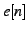
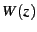

Next: Speex narrowband mode Up: The Speex Codec Manual Previous: Formats and standards Contents Index
Do not meddle in the affairs of poles, for they are subtle and quick to leave the unit circle.
Speex is based on CELP, which stands for Code Excited Linear Prediction. This section attempts to introduce the principles behind CELP, so if you are already familiar with CELP, you can safely skip to section 8. The CELP technique is based on three ideas:
The source-filter model of speech production assumes that the vocal cords are the source of spectrally flat sound (the excitation signal), and that the vocal tract acts as a filter to spectrally shape the various sounds of speech. While still an approximation, the model is widely used in speech coding because of its simplicity.Its use is also the reason why most speech codecs (Speex included) perform badly on music signals. The different phonemes can be distinguished by their excitation (source) and spectral shape (filter). Voiced sounds (e.g. vowels) have an excitation signal that is periodic and that can be approximated by an impulse train in the time domain or by regularly-spaced harmonics in the frequency domain. On the other hand, fricatives (such as the "s", "sh" and "f" sounds) have an excitation signal that is similar to white Gaussian noise. So called voice fricatives (such as "z" and "v") have excitation signal composed of an harmonic part and a noisy part.
The source-filter model is usually tied with the use of Linear prediction. The CELP model is based on source-filter model, as can be seen from the CELP decoder illustrated in Figure 1.
Linear prediction is at the base of many speech coding techniques, including CELP. The idea behind it is to predict the signal using a linear combination of its past samples:
where is the linear prediction of . The prediction error is thus given by:
![$\displaystyle e[n]=x[n]-y[n]=x[n]-\sum_{i=1}^{N}a_{i}x[n-i]$](img11.png)
The goal of the LPC analysis is to find the best prediction coefficients which minimize the quadratic error function:
![$\displaystyle E=\sum_{n=0}^{L-1}\left[e[n]\right]^{2}=\sum_{n=0}^{L-1}\left[x[n]-\sum_{i=1}^{N}a_{i}x[n-i]\right]^{2}$](img13.png)
That can be done by making all derivatives equal to zero:
For an order
filter, the filter coefficients
are found
by solving the system  linear system
,
where
linear system
,
where
![$\displaystyle \mathbf{r}=\left[\begin{array}{c}
R(1)\\
R(2)\\
\vdots\\
R(N)\end{array}\right]$](img19.png)
with , the auto-correlation of the signal , computed as:
Because
is toeplitz hermitian, the Levinson-Durbin
algorithm can be used, making the solution to the problem
instead of
. Also, it can be proven
that all the roots of  are within the unit circle, which means
that
is always stable. This is in theory; in practice because
of finite precision, there are two commonly used techniques to make
sure we have a stable filter. First, we multiply
by a number
slightly above one (such as 1.0001), which is equivalent to adding
noise to the signal. Also, we can apply a window to the auto-correlation,
which is equivalent to filtering in the frequency domain, reducing
sharp resonances.
are within the unit circle, which means
that
is always stable. This is in theory; in practice because
of finite precision, there are two commonly used techniques to make
sure we have a stable filter. First, we multiply
by a number
slightly above one (such as 1.0001), which is equivalent to adding
noise to the signal. Also, we can apply a window to the auto-correlation,
which is equivalent to filtering in the frequency domain, reducing
sharp resonances.
During voiced segments, the speech signal is periodic, so it is possible to take advantage of that property by approximating the excitation signal  by a gain times the past of the excitation:
where  is the pitch period,
is the pitch gain. We call
that long-term prediction since the excitation is predicted from
is the pitch period,
is the pitch gain. We call
that long-term prediction since the excitation is predicted from  with
.
with
.
The final excitation will be the sum of the pitch prediction and an innovation signal taken from a fixed codebook, hence the name Code Excited Linear Prediction. The final excitation is given by:
The quantization of is where most of the bits in a CELP codec are allocated. It represents the information that couldn't be obtained either from linear prediction or pitch prediction. In the z-domain we can represent the final signal as
Most (if not all) modern audio codecs attempt to ``shape'' the noise so that it appears mostly in the frequency regions where the ear cannot detect it. For example, the ear is more tolerant to noise in parts of the spectrum that are louder and vice versa. In order to maximize speech quality, CELP codecs minimize the mean square of the error (noise) in the perceptually weighted domain. This means that a perceptual noise weighting filter  is applied to the error signal in the encoder. In most CELP codecs, is a pole-zero weighting filter derived from the linear prediction coefficients (LPC), generally using bandwidth expansion. Let the spectral envelope be represented by the synthesis filter , CELP codecs typically derive the noise weighting filter as:
The weighting filter is applied to the error signal used to optimize the codebook search through analysis-by-synthesis (AbS). This results in a spectral shape of the noise that tends towards . While the simplicity of the model has been an important reason for the success of CELP, it remains that is a very rough approximation for the perceptually optimal noise weighting function. Fig. 2 illustrates the noise shaping that results from Eq. 1. Throughout this paper, we refer to as the noise weighting filter and to as the noise shaping filter (or curve).
One of the main principles behind CELP is called Analysis-by-Synthesis (AbS), meaning that the encoding (analysis) is performed by perceptually optimising the decoded (synthesis) signal in a closed loop. In theory, the best CELP stream would be produced by trying all possible bit combinations and selecting the one that produces the best-sounding decoded signal. This is obviously not possible in practice for two reasons: the required complexity is beyond any currently available hardware and the ``best sounding'' selection criterion implies a human listener.
In order to achieve real-time encoding using limited computing resources, the CELP optimisation is broken down into smaller, more manageable, sequential searches using the perceptual weighting function described earlier.